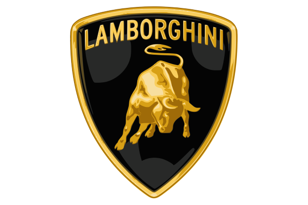
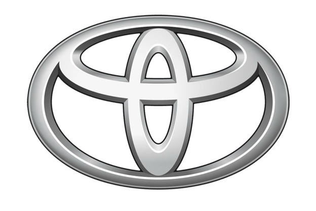
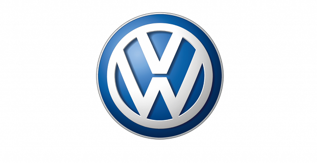

ASTON MARTİN
MARKALAR 15.12.2021
Aston Martin ismi şirketin kurucularından olan Lionel Martin’in soyadından ve başarıyı bulduğu yer olan Aston Hill Climb’den geliyor. Amblemde yer alan kanatlar hızı simgelemesi için logoya 1927 yılında eklenmiş ve Bentley’nin kanatlı kaput üstü logosundan ilham alındığı düşünülüyor.

AUDİ
MARKALAR 15.12.2021
Şirketin kurucusu August Horch, August’un oğlu Latincede Horch ile aynı anlama geldiğini söyleyerek Audi ismini önerdi. Audi logosu olan iç içe geçmiş 4 halka ise 1932 yılında Almanya’da birleşerek güç birlği oluşturan dört adet otomobil firmasını (Audi, DKW, Horch ve Wanderer) temsil eder.

BENTLEY
MARKALAR 15.12.2021
Bentley, ilk olark 1. Dünya Savaşı sırasında uçak motorları yaparak adını duyurmuştu. Amblemdeki kanatların nedeni de bu. Logonun gümüş rengi ise entellektüelliği simgeliyor. Amblemin her iki tarafındaki kanatların ise farklı sayıda tüye ev sahipliği yaptığı görülüyor, bunlar markanın tarihi boyunca değişim göstermiş.

BMW
MARKALAR 15.12.2021
Bavarian Motor Works isminin kısaltması olan BMW, ilk olarak sadece uçak üretiyordu. Bu yüzden logonun iç kısmındaki mavi bölümler gökyüzünü simgelerken, beyaz bölümler ise uçağın pervanesini oluşturuyor.

BUGATTİ
MARKALAR 15.12.2021
Bugatti ismi markanın kurucusu olan Ettore Bugatti’den geliyor. Kırmızı ovalin kenarındaki 60 noktanın ise Bugatti’nin conta eksikliği nedeniyle motorunda kullanılan emniyet tellerini temsil ettiği iddia ediliyor.

CHEVROLET
MARKALAR 15.12.2021
Ünlü ‘papyon’ logo şirketin kurulmasından iki yıl sonra ortaya çıktı. Markanın logosu hakkında ortaya çıkan iddialardan biri, Chevrolet’nin ortak kurucularından William C. Durant’in Paris’te bir otelde gördüğü bir duvarkağıdı tasarımından ilham aldığını söylüyor.
CİTROEN
MARKALAR 15.12.2021
Citroen ambleminde kullanılan Fransızların çift açılı çavuş simgesi, daha önce başka bir Citroën ürünü olan dişli çarklarda kullanılıyordu.

FERRARİ
MARKALAR 15.12.2021
Logonun üst tarafında İtalya bayrağı yer alırken, fontu oluşturan sarı renk ise Modena şehrinin rengi. Scuderia Ferrari’nin ilk harfleri de logodaki yerini almış.

FORD
MARKALAR 15.12.2021
Mavi oval ilk olarak 1927 yılında kullanıldı. Şirketin kurucusu Henry Ford’un imzası, 1909 yılında ilk kullanıldığından bu güne neredeyse değişmeden geldi.

HYUNDAI
MARKALAR 15.12.2021
Hyundai’nin logosu her ne kadar italik yazılmış bir ‘H’ harfi gbi görünse de gizli bir anlam içeriyor. Logo aslında üretici ve tüketici arasında güveni gösteren iki kişinin tokalaşmasını simgeliyor.

LAMBORGHİNİ
MARKALAR 15.12.2021
Markayı kuran Ferrucio Lamborghini, markanın amblemi olarak burcu olan boğayı seçmiş. Ve tüm Lamborghini modellerinin ismi İspanya’daki güreşçi boğalardan gelir.

MAZDA
MARKALAR 15.12.2021
Ahura Mazda, Perslerin Zerdüştlük Tanrısıdır. Şirketin web sitesi şirket adının aynı zamanda kurucusu olan Jujiro Matsuda’dan geldiğini belirtmektedir. Mazda logosundaki yuvarlak form güneşi simgelerken, M harfi ise Mazda’yı ifade ediyor.

MERCEDES
MARKALAR 15.12.2021
Mercedes-Benz’in kurucusu Karl Benz, motor fabrikası Deutz ve Köln manzaralı evinin tepesine bir yıldız amblemi koymuş ve eşine yazdığı mektupta, bu yıldızın bir gün başarıyı ve gücü temsil edeceğinden bahsetmiş. Yıllar içinde logoda değişiklik olsa da “karada, havada, suda” fikrini simgeleyen yıldız kalıcı olmuş.

OPEL
MARKALAR 15.12.2021
1898’den itibaren otomobil üretmeye başlayan firma önceki yıllarda teknolojik ilerlemeyi temsil eden bir zeplin figürünü kendine logo olarak seçmişti. Zeplinlerin modası geçince ise amblemlerde roket kullanılmaya başlandı.1963 yılına gelindiğinde ise günümüzdeki halini alan logoda şimşek figürü hızı, onu çevreleyen çember ise ise güveni simgeliyor.

PEUGEOT
MARKALAR 15.12.2021
Peugeot, logo olarak kendisine iki ayağı üzerinde duran bir aslan tercih etmiş. Şirketin otomobil üretmeye başlamasından çok önce 1847 yıllarında kullanılmaya başlanan aslan figürü, Peugeot ürünlerinin yüksek kalitesini anlatmak için seçilmiş. 1923 yılında Peugeot markalı otomobillerde sadece aslan kafası olarak gördüğümüz logo, ilerleyen yıllarda yavaşça gelişerek şimdiki halini almış.

PORSCHE
MARKALAR 15.12.2021
Porsche’nin amblemindeki siyah at, Almanya’nın Stuttgart şehrinin armasından. Geyik boynuzu ile kırmızı-siyah çizgiler ise Almanya’nın Württemberg köyünün flamasından alıntı.

RENAULT
MARKALAR 15.12.2021
Renault’un ilk amblemi aslında yuvarlak formluydu ancak 1923 yılı ile birlikte ünlü elmas formuna bürünmüş. Yıllar içinde markanın ismi de kaldırılarak elmas formlu logonun daha ön plana çıkması tasarlanmış.

TESLA
MARKALAR 15.12.2021
Markanın ismi alternatif akımı bulan Nikola Tesla’dan geliyor. Logoda yer alan stilize edilmiş T harfinin dik kısmı rotor direğini ve bunun üzerine eğri çizgi ise sabit bobinin bir kısmını temsil ederek, elektrik motorunun kesitini bizlere gösteriyor.

TOYOTA
MARKALAR 15.12.2021
Logonun içerisindeki oval halkalar müşterinin ve şirketin kalbini, bunu çevreleyen oval ise karşılıklı çıkar ilişkisini ve güveni temsil ediyor. Ve hepsi bir araya geldiğinde ise şirketin baş harfi olan ‘T’yi oluşturuyor. Her bir halkanın farklı kalınlıkta olması Japonya’nın hat sanatı ve kültürüne göndermede bulunuyor.

VOLKSWAGEN
MARKALAR 15.12.2021
Alman üretici ortaya çıkardığı ilk araba modelinin tek tip ve halka hitap ettiğinden amblemlerinde de aynı amacı ve sadeliği ifade etmek istemiş. Bu yüzden de Almanca “halk” anlamına gelen “volks” kelimesiyle araba anlamına gelen “wagen” kelimesinin baş harflerini üst üste koyup bugünkü amblemi oluşturmuşlar.

VOLVO
MARKALAR 15.12.2021
Latincede ‘ben yuvarlanıyorum’ anlamına gelen Volvo’nun amblemi firmanın isminin yanı sıra ok ve daireden oluşuyor. Mitolojide bu oklu daire, demir silahlarıyla savaş meydanlarında terör estiren savaş tanrısı Mars’ı sembolize ediyor. Volvo’nun kurucuları da demir sektöründeydiler ve demir, güç, güvenlik, dayanıklılıkla bir tutuluyordu.